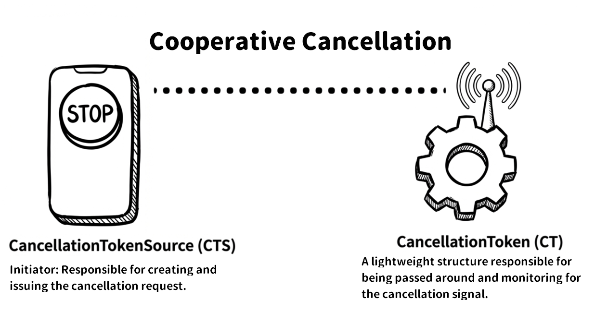
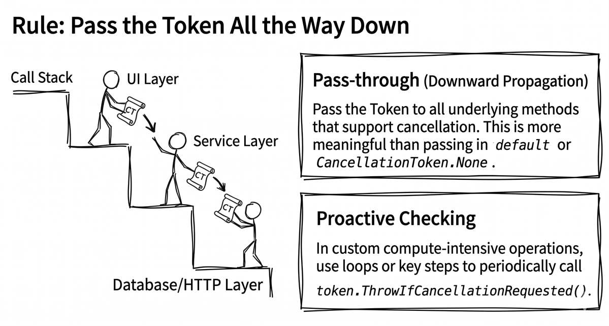
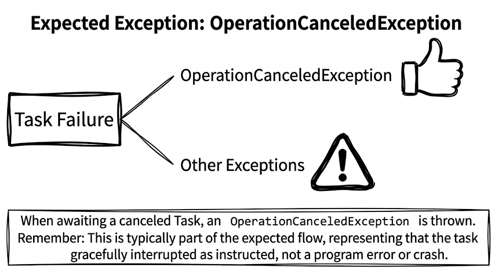

Chapter 4: Exception handling and cancellation
In an ideal world, every network request would succeed, every file would be readable, and every database query would return on time. In the real world, however, networks fail, files go missing, and databases time out. A robust application must be able to handle those unexpected situations gracefully. On top of that, because asynchronous operations usually do not finish immediately, we also need a way to cancel work that is still running in the background, for example, when the user navigates away before a download completes or when the user closes the app entirely. Otherwise, we waste system resources for no good reason.
To deal with those less-than-perfect situations, this chapter focuses on two major topics: exception handling and cancellation.
By the end of this chapter, you will be able to:
- Use
try-catchto catch exceptions thrown byawait. - Understand the role of
AggregateException, and howawaitsimplifies working with it. - Use the standard .NET cancellation pattern with
CancellationTokenSourceandCancellationToken. - Implement timeout behavior for asynchronous operations.
How await handles exceptions
One of the most elegant parts of async/await is that it makes exception handling in asynchronous code feel almost as natural as it does in traditional synchronous code. In practice, that means we can still use familiar try-catch blocks to handle errors thrown by asynchronous work. Even so, there are a few important details worth understanding about what happens under the hood.
Here is an asynchronous operation that might fail, such as trying to download content from a host that does not exist:
If GetStringAsync runs into a network problem and throws an HttpRequestException, that exception is not thrown immediately at the call site. Instead, it is first captured and stored inside the Task returned by the method. At that point, the Task enters the Faulted state.
In other words, the exception stays inside the Task until your code actually awaits it. At that moment, the stored exception is re-thrown.
Because of this “delayed throw” behavior, we can handle the error very naturally with a standard try-catch block, like this:
Example output:
As you can see, the behavior is very intuitive. You simply wrap the await calls that might fail in a try-catch block, just as you would in synchronous code. The details, such as storing the exception inside the Task and rethrowing it later, are handled for us by the compiler-generated state machine.
Source code: DemoExceptionHandling
Beware of the fire-and-forget trap
Now that we understand how await rethrows exceptions, let’s look at a very common trap. If you start an asynchronous method and then use the so-called fire-and-forget pattern, meaning you neither await it nor observe the returned Task later, any exception thrown by that method can easily go unnoticed and become a “silent failure” that can be hard to debug.
Here, “observing” a
Taskusually means awaiting it, callingWait(), or reading itsExceptionproperty so the runtime knows that you have acknowledged its failure.
Here is an incorrect example:
public void Button_Click(object sender, EventArgs e)
{
// ✘ Incorrect example: no await!
// If SaveDataAsync returns a Task and throws an exception,
// nothing catches it here, and the app usually does not crash.
// The user may think the save succeeded
// even though it actually failed.
_ = SaveDataAsync();
}As mentioned earlier, when a Task faults and nobody awaits it, the exception simply stays hidden inside that Task object. Although using the discard operator (_) suppresses the compiler warning about an unawaited task, it does not solve the real problem of swallowed exceptions. Later, when the garbage collector reclaims that abandoned Task, the runtime may raise the TaskScheduler.UnobservedTaskException event. By default, however, that does not crash the application, so this kind of bug often remains a silent failure that is difficult to detect.
To be precise, the pattern “start the task now and await it later” is fine. The dangerous part is throwing the Task away and never looking at it again. Once you do that, the caller no longer has any reliable way to know whether the operation eventually succeeded, failed, or was canceled.
There is one more important distinction to make here. The silent-failure problem we are discussing applies only to asynchronous methods that return Task or Task<T>. If the method returns async void, such as a typical UI event handler, the situation is very different. Exceptions thrown inside an async void method are not wrapped in a Task. Instead, they are thrown directly to the current SynchronizationContext, if one exists, or to the thread pool otherwise. In practice, that usually becomes an unhandled exception, which can crash the entire application. That is why, outside of special cases such as UI event handlers, we should avoid async void whenever possible.
For an explanation of
SynchronizationContext, see chapter 3.
Best practices:
- Avoid fire-and-forget whenever possible. Unless you have a very specific reason, you should eventually
awaitthe task or otherwise observe its outcome. - If you truly must use fire-and-forget, consider using a
SafeFireAndForgethelper method, whether you implement it yourself or get it from a third-party package, so failures can be logged. Another option is to place a top-leveltry-catchinside the asynchronous method itself so exceptions do not leak out unexpectedly.
The role of AggregateException
Besides the basic exception flow we just covered, there is another exception type you are very likely to encounter when working with asynchronous APIs in .NET: AggregateException. The word “aggregate” already gives away its purpose. It is essentially a container that can wrap one or more exceptions.
To understand when it appears, first look at what happens when we do not use await. If you wait for a faulted task by calling a blocking API such as Task.Wait() or Task.Result, the original exception inside the task, such as HttpRequestException, is not thrown directly. It is first wrapped inside an AggregateException, and that wrapper is what gets thrown. Consider the following example:
var faultyTask = DownloadPageAsync("https://host-not-exist.invalid");
try
{
// Using .Wait() throws AggregateException.
faultyTask.Wait();
}
catch (AggregateException ex)
{
// We need to unwrap the real exception
// from the InnerExceptions collection.
var realException = ex.InnerExceptions.First();
Console.WriteLine(
"Caught AggregateException. The real error is: "
+ realException.GetType().Name);
}Example output:
We are using the synchronous, blocking Wait() method here on purpose, just to demonstrate this behavior. Without await, a faulted task wraps one or more original exceptions inside AggregateException. In real code, of course, we should still prefer await whenever possible.
Why do Task.Wait() and .Result throw AggregateException? Because they carry forward the synchronous waiting semantics of the Task Parallel Library (TPL); when a task faults, TPL wraps all generated exceptions and throws them together. By contrast, await adopts an asynchronous exception-propagation mechanism that better aligns with developer intuition: it directly unwraps this container and rethrows the first original exception from within.
That also explains why, in the earlier page-download example, we could directly write catch (HttpRequestException ex), rather than dealing with an entire AggregateException. Thanks to await, the exception-handling code stays focused and concise.
So if await is this smart, can we simply ignore AggregateException? Not quite. In more advanced scenarios, it still matters. One important case is when we use Task.WhenAll to wait for multiple tasks that may fail at the same time.
Task.WhenAll and multiple exceptions
When we use Task.WhenAll to wait for several tasks at once, the story becomes a little more complicated. If multiple tasks happen to fail, then the task returned by Task.WhenAll, which represents the combined progress of all those tasks, contains all of the exceptions that occurred.
When you await that combined task, await still unwraps exceptions automatically, but when multiple failures occur, it has a limitation: it propagates only one of them. Which one you get is not guaranteed. The other exceptions remain in the Exception property of the task itself. Consider this example:
Example output:
As you can see, the second task’s failure never reached the catch block. If you truly need to capture and process every error that occurred, you cannot rely only on the exception rethrown by await. You also need to inspect the Task object itself through its Exception property, which is an AggregateException.
Here is a revised version:
var task1 = ThrowAsync("Error 1");
var task2 = ThrowAsync("Error 2");
var allTasks = Task.WhenAll(task1, task2);
try
{
await allTasks;
}
catch
{
// Inspect allTasks.Exception to get every error.
foreach (var innerEx in allTasks.Exception!.InnerExceptions)
{
Console.WriteLine($"Error: {innerEx.Message}");
}
}Example output:
Source code: DemoAggregateException
In this example, the foreach statement inside the catch block uses the null-forgiving operator !. That tells the compiler, “I know this value will not be null here, so please do not warn me.” For more information, see the Microsoft documentation on the null-forgiving operator.
Tip
In defensive programming, if you really care about the cause of every failure in a batch of concurrent operations, such as multiple database writes, do not rely only on the first exception rethrown by
await. As shown above, logging allInnerExceptionsinside theAggregateExceptionhelps you preserve the rest of the diagnostic information too.
Further reading: Microsoft documentation, Consuming the Task-based Asynchronous Pattern, provides a fuller explanation of Task.WhenAll, exception aggregation, and await behavior.
Canceling tasks gracefully
After seeing how to catch and handle unexpected exceptions, let’s turn to another equally important topic: canceling work.
To handle cancellation, .NET provides a standard and well-structured pattern called cooperative cancellation. The word “cooperative” is important. Cancellation in .NET does not work by brutally killing a thread. Instead, it works through communication: one side requests cancellation, and the side performing the work is responsible for listening for that request and stopping itself at an appropriate moment. This also means that if the worker never checks the CancellationToken, the cancellation signal is simply ignored and the operation continues until it finishes naturally.
This pattern revolves around two core types:
System.Threading.CancellationTokenSource(CTS): the object that creates and sends cancellation signals. You can think of it as a “Cancel” button.System.Threading.CancellationToken: the object that carries and listens for cancellation signals. It is a lightweight struct that represents a transferable cancellation signal and gets passed into the asynchronous methods that should be cancelable.

To make this model easier to remember, you can reduce it to three steps: create a CTS → pass the token → listen for cancellation inside the worker and handle the cancellation exception correctly at the call site.
Let’s look at those pieces one by one, starting with how to request cancellation and then how the worker listens for it.
Requesting cancellation
The cancellation flow begins by creating a CancellationTokenSource object, usually abbreviated as CTS:
// 1. Create a CancellationTokenSource.
using var cts = new CancellationTokenSource();
// 2. Get a CancellationToken from the CTS.
var token = cts.Token;
// 3. Pass the token to your asynchronous method.
// (This example only shows token passing.
// Full waiting and exception handling
// come in the later example.)
Task workTask = DoSomeLongRunningWorkAsync(token);
// 4. At some later point, when you decide to cancel...
Console.WriteLine("The user decided to cancel the operation!");
cts.Cancel(); // Press the “Cancel” button.Once you call cts.Cancel(), the cancellation signal is sent immediately, and every CancellationToken obtained from that CTS is notified right away. That notification does not forcibly stop a thread, however. It simply marks the token as “cancellation requested” and runs any registered cancellation callbacks. The actual stopping point still depends on when the worker checks the token or when an underlying API that supports cancellation notices the signal.
Note
Starting with .NET 8,
CancellationTokenSourcealso providesCancelAsync(). If you need to wait until all callbacks registered with theCancellationTokenand any related cancellation-notification flow have finished running before doing anything else, you can useawait cts.CancelAsync(). In this chapter, we usects.Cancel()because the example is focused on the basic idea of “requesting cancellation,” and the example itself does not need to wait for every callback to finish before moving on.
Listening for cancellation and passing the token through
Now let’s switch to the other side. An asynchronous method that performs the actual work must accept the CancellationToken as a parameter and then take on two responsibilities:
- Check it periodically. If your method contains a loop or several time-consuming steps, it must keep checking whether cancellation has been requested.
- Pass it through. Forward that same token to any lower-level call that supports cancellation, such as a database query, an HTTP request, or another asynchronous method.
This is an important best practice in C# asynchronous programming: pass the token all the way down.

The following example demonstrates both “keep checking” and “pass it through.” Notice that the method checks for cancellation explicitly inside the loop and also forwards the same token to Task.Delay, a lower-level API that supports cancellation:
static async Task DoSomeLongRunningWorkAsync(CancellationToken token)
{
Console.WriteLine("Background work started...");
try
{
for (int i = 0; i < 10; i++)
{
// Check whether cancellation has been requested
// (for example, inside a CPU-intensive loop).
token.ThrowIfCancellationRequested();
Console.WriteLine($"Working on part {i + 1}/10...");
// Important: keep passing the token to any lower-level API
// that supports cancellation.
await Task.Delay(1000, token);
}
Console.WriteLine("Background work completed successfully.");
}
catch (OperationCanceledException)
{
Console.WriteLine("Background work was canceled.");
throw; // Usually we should rethrow it.
}
}As the code shows, inside asynchronous work we often call token.ThrowIfCancellationRequested() at the start of a loop or at other key points to check whether the token has been canceled. If cancellation has been requested, that method throws OperationCanceledException and interrupts the operation.
ThrowIfCancellationRequestedthrowsOperationCanceledException, andTask.Delaymay also throwOperationCanceledExceptionor its derived typeTaskCanceledException.
So what happens at the call site after the worker throws that cancellation exception? When we await a canceled task, the OperationCanceledException mentioned above, or one of its derived types such as TaskCanceledException, is rethrown. That means we can simply catch that specific exception type and clearly distinguish cancellation from a real system failure.
In other words, catching a cancellation exception is often part of the expected control flow and does not automatically mean there is a bug. If we catch some other exception type, that is when we should treat it as an actual error. The following example connects the caller and the worker:
// 1. Create a CancellationTokenSource.
using var cts = new CancellationTokenSource();
// 2. Get a CancellationToken from the CTS.
var token = cts.Token;
// 3. Pass the token to your asynchronous method
// (do not await it immediately, so it can run in the background).
Task workTask = DoSomeLongRunningWorkAsync(token);
// Simulate the user spending some time before deciding to cancel.
await Task.Delay(2500);
// 4. At some later point, when you decide to cancel...
Console.WriteLine("\n[Caller] The user decided to cancel the operation!");
cts.Cancel(); // Press the “Cancel” button.
try
{
await workTask; // Wait for the background work to finish.
}
catch (OperationCanceledException)
{
// This is expected.
Console.WriteLine("The caller caught OperationCanceledException.");
}
catch (Exception ex)
{
// This is the real error case.
Console.WriteLine($"The work failed: {ex.Message}");
}Example output:
Source code: DemoCancellationToken

Note
Many built-in asynchronous .NET APIs, such as methods on
HttpClientandTask.Delay, provide overloads that accept aCancellationToken. Use them whenever you can. Those APIs often already implement the most efficient cancellation-listening logic internally. In other words, the cancellation signal can plug directly into the wait, timer, or I/O operation itself instead of having to wait until your code manually polls the token again.
Cancellation may come from more than one source. For example:
- Case A: the outer caller changes its mind and cancels the incoming
token. - Case B: a nested component or third-party library cancels its own operation because it waited too long and throws
OperationCanceledException.
In this situation, C#’s when clause becomes useful. It lets us narrow the conditions under which a catch block runs, so we only handle the cancellation case we care about. For example, if you want to confirm that cancellation was triggered specifically by the token passed in by the caller, you can write:
That said, this comparison is not universal. If CreateLinkedTokenSource is involved, or if a lower-level API throws an OperationCanceledException that carries a different token, then oce.CancellationToken may not equal the original token you passed in. When multiple cancellation sources exist, a more reliable approach is often to do what we will do in the timeout example later: check whether IsCancellationRequested is true on the source token you own.
Registering cancellation callbacks
So far, we have focused on actively checking the token. But sometimes an older or third-party API you are using may not directly support CancellationToken, or you may need to do some extra cleanup the moment cancellation occurs, such as closing an open socket connection or deleting a temporary file that was only half written. In those situations, you can use CancellationToken.Register to register a callback that runs on cancellation:
When you call Register, it returns a CancellationTokenRegistration, which implements IDisposable. That is why putting it in a using declaration or a using block is important. Doing so ensures the registration is cleaned up correctly after the operation completes or after the cancellation callbacks finish running. It may look like a small detail, but it matters when you want to avoid memory leaks.
In practice, cancellation callbacks should be short and reentrant. Because the callback may run as part of the cancellation flow, overly expensive work inside it can slow down or seriously interfere with cancellation itself. “Reentrant” means that even if the same cleanup logic is entered multiple times, or interleaves with other cleanup flows, it should not leave the object in a broken state.
Important: the memory-leak trap when registering callbacks
There is an easy-to-miss detail here. Suppose the
CancellationTokencomes from a long-lived source, such as ASP.NET Core’sApplicationStoppingor a global CTS that lives for the whole lifetime of the application. What happens if each short-lived operation callstoken.Register(...)but never disposes the registration?Your callback delegate, together with any variables and objects it closes over, remains held by that long-lived CTS. Over time, that becomes a memory leak. So this is a habit worth building: either use a
usingblock as shown above or explicitly call.Dispose()to unregister the callback.
Further reading: Microsoft documentation, Cancellation in Managed Threads, summarizes CancellationToken, Register, linked tokens, and important notes about cancellation callbacks and Dispose.
A non-cancelable token
Sometimes a method signature requires you to pass a CancellationToken, but you do not actually intend to offer cancellation for that operation. In that case, the standard choice is CancellationToken.None:
// Make the intent explicit:
// this operation does not support cancellation here.
await DoSomethingAsync(CancellationToken.None);This is more readable than passing default(CancellationToken) because it expresses your intent more clearly.
Implementing timeouts
Once you understand the cancellation pattern, implementing a timeout becomes quite natural. In essence, a timeout is simply “automatically request cancellation once a certain amount of time has passed.”
CancellationTokenSource makes this easy because one of its constructors accepts a time span. If you pass a duration when creating the CTS, it will automatically call Cancel() after that amount of time has elapsed.
Let’s start with a simple example:
// Create a CTS that automatically cancels after 3 seconds.
using var cts = new CancellationTokenSource(TimeSpan.FromSeconds(3));
try
{
Console.WriteLine(
"Starting a job that is allowed " +
"to run for at most 3 seconds...");
// Assume this work takes more than 10 seconds internally.
await DoSomeLongRunningWorkAsync(cts.Token);
}
catch (OperationCanceledException)
{
Console.WriteLine("The work was canceled because it timed out!");
}The key point in this design is that DoSomeLongRunningWorkAsync itself does not need to know anything about the concept of a timeout. It only has to listen to the incoming CancellationToken. On the caller side, we simply create a CTS that cancels itself automatically, and any token-aware asynchronous operation gains timeout behavior. This is a highly composable design.
That said, in this example we can safely interpret the caught OperationCanceledException as “a timeout happened” only because there is exactly one cancellation source, namely the auto-canceling CTS we created ourselves. In real APIs, you will often receive another CancellationToken from outside as well. Once multiple cancellation sources are involved, you can no longer assume every OperationCanceledException means a timeout. You need extra logic, as the next section demonstrates, to tell whether a particular cancellation was caused by running too long or by the caller actively canceling the operation.
Source code: DemoTimeouts
Here is the output from the DemoTimeouts sample:
Testable timeout logic with TimeProvider (.NET 8+)
This section shows how to use .NET’s TimeProvider to decouple timeout logic from the real system clock, so timeout behavior becomes fast and reliable to test.
Think back to the timeout approach from the previous section. It is simple and convenient in production code, but it creates a real problem in tests: we cannot control system time very easily. If we need to verify a rule like “timeout after 30 seconds,” do we really want the test to sit there and wait for 30 actual seconds to pass? That would make the whole test suite slow and fragile.
.NET 8 introduced the abstract class System.TimeProvider to solve that problem. It allows us to fast-forward time in tests and control the passage of time precisely.
This pattern requires .NET 8 or later. On the test side, you can pair it with FakeTimeProvider from the Microsoft.Extensions.TimeProvider.Testing package in the Microsoft.Extensions.Time.Testing namespace. In practice, the first step is usually to inject a TimeProvider into your service, whether by dependency injection or by passing it as a method or constructor parameter. In production, you inject TimeProvider.System. In tests, you inject FakeTimeProvider instead.
For example:
public class MyService(TimeProvider timeProvider)
{
public async Task DoWorkWithTimeoutAsync(CancellationToken token)
{
// Pass TimeProvider to the CancellationTokenSource constructor.
// This is similar to new CancellationTokenSource(delay),
// but now it is testable.
var seconds = TimeSpan.FromSeconds(30);
using var cts = new CancellationTokenSource(seconds, timeProvider);
// Link the external token too
// (if the caller cancels, we should cancel as well).
using var linkedCts =
CancellationTokenSource.CreateLinkedTokenSource(
token, cts.Token);
try
{
await DoActualWorkAsync(linkedCts.Token);
}
catch (OperationCanceledException)
when (cts.Token.IsCancellationRequested
&& !token.IsCancellationRequested)
{
// Treat it as a timeout only when the timeout token was canceled
// and the external token was not.
throw new TimeoutException("The operation timed out.");
}
}
}The first step here is to use CancellationTokenSource.CreateLinkedTokenSource to link two cancellation signals that were originally separate: one is the caller’s token (token), and the other is the timeout-driven token (cts.Token). This ensures that if either one requests cancellation, the subsequent work stops.
Another detail worth noting is that CreateLinkedTokenSource returns a brand-new CancellationTokenSource instance, which we store in linkedCts. That is also why the sample uses using var linkedCts. A linked CTS registers for cancellation notifications on its source tokens, so disposing it afterward removes those registrations. That helps prevent a short-lived operation from being kept alive indirectly by a longer-lived token.
Once the setup is done, execution enters the try block and starts the asynchronous work. If a cancellation exception occurs, the key is the exception filter on the catch block. By checking the current token states, the filter ensures that only the case where “the timeout token has been canceled, but the external token has not” is translated into a more meaningful TimeoutException. If the caller actively canceled the operation instead, we do nothing and let the original OperationCanceledException preserve its cancellation semantics.
Note
To keep the focus on timeout and cancellation flow, the example omits the implementation details of
DoActualWorkAsync. For a complete compilable version, see the sample project linked in this section.
In unit tests, we can replace the real clock with FakeTimeProvider from Microsoft.Extensions.Time.Testing and pass that simulated TimeProvider into the service.
FakeTimeProvider does not actually change the system clock. It simply intercepts your code’s calls to TimeProvider APIs, such as GetUtcNow(), and returns whatever fake time you configure, so it does not affect the operating system or other threads. Here is an example:
[Fact]
public async Task Should_Throw_TimeoutException_When_Time_Passes()
{
// Arrange
var fakeTime = new FakeTimeProvider();
var service = new MyService(fakeTime);
// Act
var task = service.DoWorkWithTimeoutAsync(CancellationToken.None);
// Assert: the task should not be completed yet.
Assert.False(task.IsCompleted);
// Act: fast-forward time by 30 seconds plus 1 tick.
fakeTime.Advance(TimeSpan.FromSeconds(30) + TimeSpan.FromTicks(1));
// Assert: the task should now fail with TimeoutException.
await Assert.ThrowsAsync<TimeoutException>(() => task);
}In this test, the final assertion basically says, “At this point in the test, I expect this task to fail with a TimeoutException.” Let’s break that down:
Assert.ThrowsAsync<TimeoutException>(...)is the asynchronous assertion helper provided by xUnit. It declares that the action inside should fail by throwingTimeoutException.- The
() => taskinside it is aFunc<Task>delegate. It hands the task under test toThrowsAsyncso the framework can verify its outcome. - The outer
awaitwaits for the assertion itself to finish. If aTimeoutExceptionreally occurs, the assertion succeeds and the test passes. - Conversely, if no exception is thrown, or a different exception type appears instead, such as
OperationCanceledException, the test fails.
By using TimeProvider, we can write more robust timeout logic and also make tests dramatically faster. Instead of waiting dozens of real-world seconds, the same tests can complete in just a few milliseconds. That is an important improvement .NET 8 brought to APIs that depend on time.
Source code: DemoTimeProviderTest
Further reading: Microsoft documentation, What is TimeProvider?
Summary
This chapter focused on the most common “non-ideal” situations in asynchronous programming. We learned how to use familiar try-catch blocks to handle asynchronous exceptions, and we saw how await saves us from manually unpacking AggregateException in the most common cases.
Just as importantly, we learned the standard .NET pattern for cooperative cancellation. With CancellationTokenSource and CancellationToken, we can let users stop long-running work on demand and also add timeout protection to asynchronous operations.
At this point, you have a key part of the foundation you need to write robust asynchronous code. You now know not only how to handle the success path, but also how to respond properly to failures and cancellations. The next challenge is to keep data correct and consistent when multiple asynchronous tasks run at the same time and share resources. That is exactly what the next chapter, “thread synchronization and classic problems,” is about.